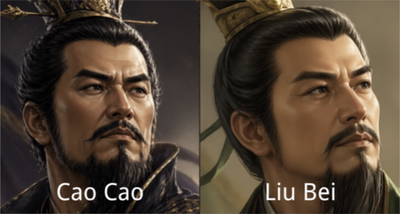

在《炉石传说》这类策略卡牌游戏里，单位一旦上场就能免费留在场上。但在真实的历史中——尤其是三国时期——后勤补给线往往比单场战斗更能决定胜负。
Supply Line 围绕一个核心动词构建：补给（To Provision）。玩家不仅是统帅，也是军需官。游戏的紧张感不只来自击败敌人，更来自在作战的同时维持自己军队的补给线。场上每个单位每回合都要支付维持费。粮草耗尽，军队就会从内部崩溃。

三套相互咬合的系统，带来不同于普通卡牌游戏的策略体验：
-
前线城墙——3 个槽位玩家把单位部署到只有 3 个槽位的前线上。只要敌方场上还有单位，你就不能直接攻击敌方武将——必须先清掉他们的部队。这迫使每位玩家在追求击杀之前，先考虑场面控制。
-
维持费与补给和《炉石传说》里单位免费留场不同，Supply Line 中的每个单位每回合都要消耗粮草才能存活。粮草不会自动刷新——玩家必须主动管理资源，否则只能眼看着军队断粮离场。
-
召唤失调新单位在部署的当回合不能攻击。再加上先手玩家第一回合的收入惩罚，这杜绝了一回合击杀的打法，让双方进入节奏更慢、更讲究战术的对局。
-
翻盘技能武将血量降低时，会自动解锁一项特殊技能。刘备获得嘲讽（迫使敌人以他为目标，保护较弱的单位）；曹操的下一个单位获得冲锋（可以立即攻击）。这些机制避免了一边倒的“滚雪球”，让对局直到最后都保持悬念。

每位武将都赋予玩家独特的作战风格，以及一项在劣势下触发的专属翻盘技能。武将头像由 AI 生成，卡牌插画为手绘。
翻盘技能：受到伤害时，曹操部署的下一个单位获得冲锋——上场当回合即可攻击，打出出其不意的强势反击。
翻盘技能：血量降到 10 或以下时，刘备的下一个单位自动获得嘲讽——敌人必须优先攻击它，从而掩护较弱的单位，争取恢复的时间。
孙权计划在下一个开发阶段加入，带来第三种独特玩法，侧重水路后勤与快速恢复资源。

Supply Line 经历了多轮设计迭代——从实体卡牌原型起步，逐渐演变成一款数字 PvE 游戏。每一次试玩都暴露出新的问题，推动设计向前。
从“补给”这个动词出发，设计了一套包含 50–60 张卡牌、粮草标记和两位武将的纸面原型。最初的试玩暴露出三个关键问题：游戏结束得太快（第一回合就能一回合击杀），核心的补给机制根本没被触发，落后的玩家也毫无还手之力。
引入了 3 槽位前线城墙、召唤失调、先手第一回合收入惩罚，以及武将翻盘技能。这些改动放慢了游戏节奏，迫使玩家真正与补给系统互动，也给了落后的玩家翻盘的机会。
转到 Unity 来处理维持费、血量和资源追踪这些复杂计算。第一个数字版本实现了 3–4 个核心机制。AI 对手太弱，还无法进行有意义的测试，但数字化消除了纸面版本里频繁出现的计算错误。
游戏最初设计为 PvP，但联网多人在项目周期内开发难度太大。转向 PvE 后，可以更专注于平衡核心机制、测试补给系统，而不必额外处理网络逻辑。
所有游戏机制实现完毕。加入了武将头像（AI 生成）和手绘卡牌插画。最后阶段：修复 bug、打磨 UI。
下面的视频展示了一局完整的对局——包括维持费系统、前线管理，以及后期触发的翻盘技能。